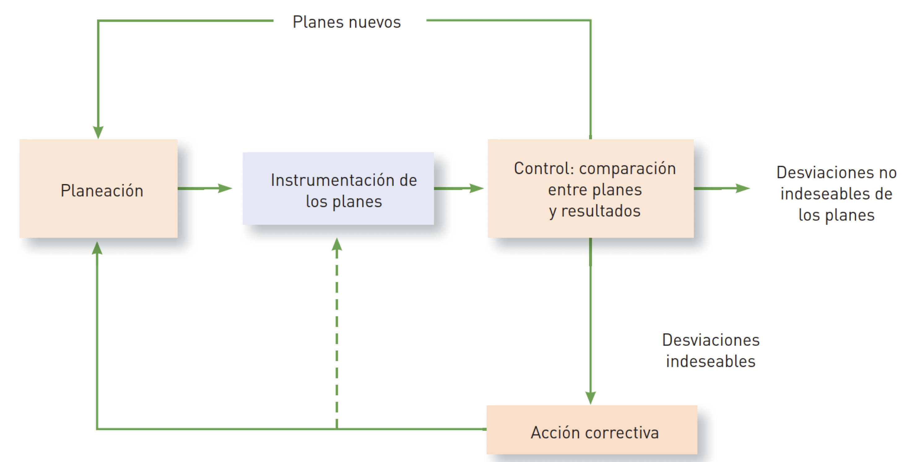
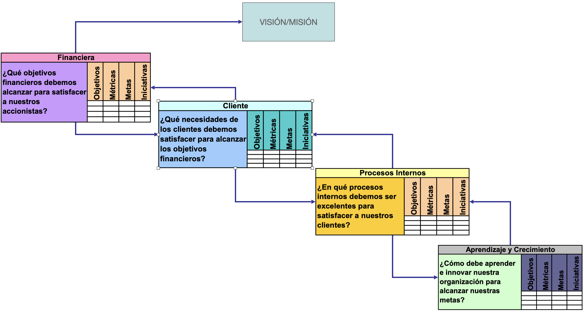

Indicators
IN2004B: Generation of Value with Data Analytics
Agenda
- Conceptos Básicos de Indicadores
- Modelos para Definir Indicadores
- Documentación de Indicadores
Conceptos Básicos de Indicadores
La administración
“Administración es el proceso mediante el cual se diseña y mantiene un ambiente en el que individuos que trabajan en grupos cumplen metas específicas de manera eficaz”.
Koontz, Harold, “Administración”, 14 Edición, Mc Graw Hill, México, 2012
Funciones de la Administración
El proceso administrativo se desglosa en cinco funciones gerenciales:
- Planear: elegir misiones y objetivos, y las acciones para lograrlos
- Organizar: establecer una estructura intencional de funciones que las personas desempeñen en una organización
- Integrar personal: Cubrir y mantener cubiertos los puestos en la estructura organizacional
- Dirigir: Influir en las personas para que contribuyan a las metas organizacionales y de grupo
- Controlar: Medir y corregir el desempeño individual y organizacional para asegurar que los hechos se conformen a los planes.
Integración de la Planeación y el Control

Planeación
Como resultado del proceso de planeación pueden generarse algunos de estos tipos de planes:
- Objetivos o metas. Son resultados específicos y medibles.
- Estrategias. Enfoques o planes para lograr objetivos.
- Procedimientos. Detallan la ejecución de una actividad.
- Programas. Conjuntos organizados de actividades para alcazar objetivos.
- Presupuestos. Planes financieros detallados para facilitar la toma de decisiones económicas.
Alta necesidad de medir progreso
Definición de Objetivos SMART
Specific: Un objetivo debe ser claro y específico, evitando la ambigüedad. Debe responder a las preguntas qué, quién, cuándo, dónde y por qué.
Measurable: Un objetivo debe ser cuantificable o al menos evaluable para determinar el progreso y el éxito. Debe ser posible medirlo con indicadores o criterios tangibles.
Achievable: Un objetivo debe ser realista y alcanzable, teniendo en cuenta los recursos disponibles, el tiempo y las habilidades necesarias.
Relevant: Un objetivo debe ser relevante y estar alineado con los objetivos más amplios de la organización o del individuo.
Time-bound: Un objetivo debe tener un plazo o fecha límite claramente definidos.
Ejemplo 1
Objetivo: Cumplir con capacitación de personal
SMART: Cumplir con al menos el 90% del programa de capacitación 2014 para todo el personal operativo de la empresa para el 30 de noviembre del presente año.
Ejemplo 2
Objetivo: Aumentar las ventas un 20%.
SMART: Lograr un incremento de ventas del producto X de al menos 17% al termino del primer semestre del 2015, manteniendo una rentabilidad para la empresa de al menos 5%.
Necesidad de medir
Para poder llevar a cabo los procesos de Planeación, Instrumentación y Control, es necesario contar con un sistema de información que permita evaluar si se están logrando los fines que se planearon, y si las acciones instrumentadas se están llevando también de acuerdo con los planes.
La información es necesaria para corregir los planes o su instrumentación, y para producir nuevos planes.
¿Qué es un indicador?
“Es el resultado de una medición cuantitativa o cualitativa, o algún otro criterio, mediante el cual se puede evaluar el desempeño, la eficiencia, el logro, etc., de una persona u organización, frecuentemente comparándolo con un estándar o con una meta”.
Collins English Dictionary.
“The qualitative and/or quantitative information on an examined phenomenon (or a process, or a result), which makes it possible to analyze its evolution and to check whether quality targets are met, driving actions and decisions”.
Franceschini, Fiorenzo & Galetto, Maurizio & Maisano, Domenico. (2007). Management by Measurement: Designing Key Indicators and Performance Measurement Systems. 10.1007/978-3-540-73212-9.
Ejemplos de indicadores


Características de un indicador
Fundamentales:
Validez: el indicador debe mostrar fielmente el comportamiento real del fenómeno, variable, resultado, etc., que se desea medir.
Estabilidad: el indicador debe definirse, calcularse e interpretarse de la misma manera a través del tiempo (permite comparaciones y observar tendencias).
Ideales:
- Simple y fácil de interpretar.
- Capaz de indicar tendencias a través del tiempo.
- Sensible a cambios dentro y fuera de la organización.
- Fácil recolección y procesamiento de los datos.
- Fácil y rápida actualización.
Utilidad de los indicadores

Dimensiones de análisis
Los indicadores y los datos que conducen a ellos, muchas veces se estratifican con respecto a otras variables.
A las variables que se utilizan como criterios de estratificación se les denomina “Dimensiones de análisis” (son dimensiones desde el punto de vista de hipercubos de datos).
Ejemplo: En un proceso de ventas, las ventas mensuales de pueden estratificar por: canal de distribución, región del país, familia de productos, etc., para efectos de su análisis y visualización.
Por ejemplo

Elección de indicadores
La elección de los indicadores es un factor crítico para que una organización se acerque al cumplimiento de su misión y haga realidad sus estrategias. Los indicadores y las estrategias están inevitablemente vinculados.
Una estrategia sin indicadores es inútil, los indicadores sin una estrategia son irrelevantes!
Existen dos tipos principales de indicadores
- Adelantados
- Retrasados
Indicadores adelantados y retrasados (leading – lagging)
Un indicador retrasado (lagging) mide el resultado del desempeño al final de un periodo, tiene una orientación hacia el pasado porque nos muestra las consecuencias de lo que ya se hizo. También se conocen como indicadores de resultado.
Un indicador adelantado (leading) mide el desempeño de los factores que son críticos ahora, para obtener un resultado deseado en el futuro. También se conocen como indicadores de actuación.
Indicador Retrasado
Propósito: Mide el resultado del desempeño al final de un periodo
Ejemplo: Ventas anuales, market share, ROI
Ventaja: Son objetivos
Desventaja: Reflejan el efecto de acciones del pasado.
Indicador Adelantado
Propósito: Mide procesos, actividades, comportamientos
Ejemplo: # de clientes visitados, # de cursos ofrecidos
Ventaja: Son predictivos, permiten corregir la estrategia
Desventaja: Basados en hipótesis causa-efecto.
Otros Ejemplos
En el contexto de un YouTuber:
Indicador adelantado: Número de vistas de un video de YouTube en las primeras 24 horas.
Indicador retrasado: Ingreso mensual generado por la monetización.
En el contexto del departamento de ventas de Netflix:
Indicador adelantado: Número de usuarios que comienzan una prueba gratuita en un mes dado.
Indicador retrasado: Ingreso mensuales por suscripciones.
Otros Ejemplos
En el contexto de una empresa de GenAI:
Indicador adelantado: Número de programadores contratados con expertise en IA.
Indicador retrasado: Numero de licensias vendidas al año.
En el contexto de una empresa de mantenimiento de minisplits:
Indicador adelantado: El tiempo promedio de respuesta del servicio técnico a solicitudes de soporte.
Indicador retrasado: Numero de reseñas positivas en Google Maps en un mes.
¿Cómo defino un indicador?
Criterios de selección:
Relación directa con el objetivo a medir
Facilidad de comunicación enfocada a la estrategia
Repetibilidad y confiabilidad
Frecuencia de actualización
Utilidad en la fijación de metas
Utilidad para asignar responsabilidades
Utilidad para el despliegue hacia abajo
Indicadores Básicos y Derivados
Un indicador básico se obtiene de la medición directa de un fenómeno o hecho. Por ejemplo: Número de pedidos entregados completos y a tiempo en la semana.
Un indicador derivado combina la información de dos o más indicadores básicos o derivados. Por ejemplo: Porcentaje de pedidos entregados completos y a tiempo en la semana.
Ejemplo: en Análisis de modos de falla y efectos
Indicadores básicos: Severidad, Ocurencia, Detección
Indicador derivado: Risk Priority Number = SOD
Ejemplo 3
En el análisis de modos de falla y efectos, tenemos los siguientes indicadores básicos:
Severidad (S): Mide el impacto o la gravedad de la falla en caso de que ocurra. Se mide en una escala del 1 al 10, donde 1 indica un efecto insignificante y 10 representa un efecto catastrófico para el usuario o el sistema.
Ocurrencia (O): Evalúa la probabilidad de que la falla ocurra. Se evalua en una escala de 1 al 10, donde 1 indica que la ocurrencia es muy rara y 10 que es altamente probable o frecuente.
Detección (D): Representa la capacidad del sistema para detectar la falla antes de que llegue al cliente o al usuario final. Se califica en una escala del 1 al 10, donde 1 significa que la detección es casi segura y 10 que es muy difícil o imposible de detectar antes de que ocurra un problema.
Indicador derivado: Número de Prioridad de Riesgo = S\(\times\)O\(\times\)D
El Formato de un Indicador
Un indicador se debe medir númericamente usando:
Números absolutos: Resultantes de un proceso de medición o conteo (volumen producido, precio de la acción, número de empleados, costos fijos…)
Tasas: Relación entre dos variables con diferentes unidades (número de unidades / número de operarios, consumo energético / litros producidos…)
Índices: Cantidad adimensional que resulta de dividir el valor actual de una variable entre un valor base de referencia de esa variable (índice de precios al consumidor)
Proporciones: Relaciones entre dos variables que se miden en las mismas unidades (hombres vs mujeres, admitidos vs rechazados)
Porcentajes de crecimiento o decrecimiento: (Valor actual – Valor anterior)*100/Valor anterior.
Evaluaciones: Evaluaciones de una variable cualitativa en una escala ordinal tipo Likert (bajo medio alto, pésimo malo regular bueno excelente).
Actividad 1.1 (cooperative mode)
Júntate en equipos de 3 y pregúntale a ChatGPT! Para los siguientes conceptos sugieran al menos un indicador cuantitativo adelantado (leading) y un indicador retrasado (lagging):
Productividad mensual de una línea de producción de muebles
Rotación anual de personal en una empresa de manufactura
Nivel de servicio al cliente de una empresa que fabrica envases de plástico y entrega regionalmente
Rentabilidad del negocio para una empresa mediana mayorista de abarrotes.
Desempeño del proceso de recaudación de fondos de una asociación de apoyo a niños en situación de calle.
Recuerda que …
Los propósitos de un indicador son:
Establecer metas cuantitativas
Motivación organizacional, inducción de conductas deseables
Evaluación de la estrategia y aprendizaje estratégico.

Modelos para Definir Indicadores
¿Cuáles indicadores debemos utilizar?
Una vez que conocemos qué son los indicadores, su papel dentro del proceso administrativo, y los tipos de indicadores existen, nos preguntamos ¿Cuántos indicadores debemos tener? ¿Cuál es un conjunto apropiado de indicadores? ¿Cómo los documentamos y compartimos?
Aunque hay algunos indicadores que pudieran aplicarse de manera general a cualquier empresa, cada empresa tiene su propia estrategia, sus propias prioridades, su entorno competitivo particular, por lo tanto, el conjunto más conveniente de indicadores depende de cada organización.
Aquí describimos modelos para encontrar el número y conjunto apropiado de indicadores.
Estrategia y Ejecución

La estructura de planeación y control de la organización provee un marco de trabajo para identificar y estructurar el sistema de indicadores.
Ya que uno de los retos primordiales de cualquier organización consiste en alinear la ejecución con la estrategia, o la estrategia con la ejecución.
Los sistemas de indicadores para la medición del desempeño deben apoyar a mantener el vínculo entre la estrategia y la ejecución.

Modelos para Definir Indicadores
Los modelos para definir indicadores dependen del tipo de planeación estratégica.
Tres marcos de planeación estratégica son:
- Administración por Objetivos (APO; Peter Drucker, 1954)
- Hoshin Kanri
- Balanced Score Card (BSC; Kaplan & Norton, 1992, 1996)
Balance Score Card (BSC)
Es un modelo que ayuda a las organizaciones a traducir la estrategia en objetivos operacionales (medibles), que resulta en acciones, conductas y desempeño.
BSC incluye todos los factores críticos de éxito en un sistema de medición, que brinda a las organizaciones una mejor posibilidad de alcanzar sus metas.
Objetivos del BSC
Traducir la estrategia a objetivos medibles.
Alinear los componentes de la estrategia: objetivos, indicadores e iniciativas.
3.Comunicar la estrategia a la organización.
- Crear la base para una administración estratégica.
BSC convierte la estrategia en un sistema integrado definido a través de 4 perspectivas:
- Financiera
- Clientes
- Procesos Internos
- Aprendizaje y crecimiento

Las 4 perspectivas
BSC convierte la estrategia en un sistema integrado definido a través de 4 perspectivas:
- Financiera. Incluye objetivos relacionados con la rentabilidad, productividad, utilidades, precio de las acciones, etc., son los objetivos que debe lograr la organización desde la perspectiva de los accionistas.
- Clientes. Incluye objetivos relacionados con la propuesta de valor de la empresa, están orientados al mercado y se establecen desde la perspectiva de los clientes. Incluye objetivos de percepción de los clientes en cuanto al servicio, tiempo de entrega, calidad, valor/precio.
- Procesos Internos. Incluye objetivos relacionados con el desempeño de los procesos que son críticos para cumplir con los objetivos de la perspectiva de clientes. Objetivos de desempeño de la Cadena de Valor primaria del negocio.
- Aprendizaje y crecimiento. Son los objetivos relacionados con los habilitadores para lograr los objetivos de las otras perspectivas. Son objetivos de desarrollo de competencias, ambiente laboral, ambiente físico, infraestructura tecnológica, etc.
Ejemplo: Planear tu Fiesta de Cumpleaños


Componentes del Modelo
Para cada perspectiva se debe definir:
Un conjunto pequeño de objetivos estratégicos
Para cada objetivo una (o más si es indispensable) métrica como indicador de desempeño
Para cada indicador establecer metas de largo y corto plazo
Iniciativas (programas, proyectos, acciones) para cerrar las brechas entre el desempeño actual y el deseado de acuerdo con las metas.
Mapa Estratégico
El mapa estratégico muestra los objetivos estratégicos dentro de cada perspectiva usando una matriz.
Se muestran también posibles relaciones causales entre los objetivos mediante flechas.
Si se revisan los estatutos estratégicos de la organización (Visión y Misión) se pueden incluir Temas Estratégicos que mostrarán si la organización está atendiendo dichos temas de manera explícita en la planeación.
Estructura del Mapa Estratégico

Actividad 1.2 (cooperative mode)
- Júntate en equipos de 3.
- Construye un mapa estratégico como parte de la aplicación del modelo Balanced Scorecard.
Lee la introducción del mini-caso Muebles Finos MF en CANVAS
La actividad consiste en asignar los objetivos de la empresa a las perspectivas del modelo BSC y a las líneas estratégicas del negocio. Una vez que hayan colocado los objetivos en el mapa, vincula los objetivos entre sí, estableciendo relaciones causa-efecto entre los objetivos. Se te pide también seleccionar 3 de los objetivos y proponer al menos un métrico sugerido para cada uno de ellos. Finalmente, escribirás la justificación de las relaciones causales establecidas
Comentarios Finales
Una vez que se ha diseñado el modelo de BSC para la empresa, se procede a desarrollar modelos específicos por áreas funcionales.
En las áreas funcionales se trabaja a partir de los objetivos estratégicos, identificando objetivos particulares del área funcional.
Es más frecuente utilizar indicadores de actuación que de impacto a nivel departamental.
No necesariamente se mantienen todos los temas estratégicos en las áreas funcionales, ni necesariamente todas las áreas tienen objetivos en todas las perspectivas del BSC.
Es indispensable que los gerentes funcionales entiendan perfectamente el BSC de la empresa y la contribución de su área a los objetivos globales.
El responsable del despliegue de BSC debe asegurar la congruencia y alineación de los BSC funcionales.
Algunos indicadores a nivel organizacional son simplemente agregaciones de los indicadores departamentales.
Documentación de Indicadores
Documentación de Indicadores
Cuando se están seleccionado y/o diseñando los indicadores, es necesario documentar formalmente la definición de cada uno de los indicadores.
La documentación es muy útil porque:
Ayuda a clarificar el significado de los indicadores.
Facilita la comunicación entre los usuarios y creadores de los indicadores.
Sirve como referencia futura cuando se revise el sistema.